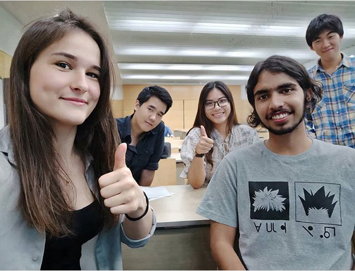

From this year on, I have decided to write about my progress throughout the year. Not just progress, but anything of note.
I think one of the most fruitful things to happen to me over this year, happened towards the beginning of this semester, when I read Atomic Habits. It was pure revelation. I am soaking in the knowledge even now. One of the incessant problems I've always had was this feeling of wanting productivity to be fun.
This book was extremely helpful in letting me know that systems matter more than outcomes, and that shaping your environment is much easier than shaping yourself. Next year will hopefully be the year where I fully reap the benefits of this amazing book.
I went for one of the happiest trips in my life this year. It was when I visited Japan. The trip has settled in my memory as a golden period. I loved every part of it, which is strange considering that you are supposed to dislike at least *something* on a trip. But I'm grateful for whatever invisible forces made it an impossibly good trip.
Then there was my website. I started this blog towards the beginning of this semester after scrapping my old website. My old website was good, but it wasn't really representative of who I was. I wanted a minimalistic design with a focus on technical posts. A long way to go, but the journey's been fun up till now.
I jumped hard into computer security this year. A jump I've been meaning to make for a while. I joined a CTF team in my college, I got selected for the Cisco SecCon CTF Finals, and I also got selected for the InCTF finals. I have been trying to bug hunt for a while, but lately I have been feeling that I am not really interested in it. I only did it in hope of getting some bounties. I have been enjoying CTFs a lot more, and perhaps will get back to bug hunting once I have more skills.
Academically, I performed pretty good this year. I ranked third in my branch (by GPA). This semester's result aren't out yet, but I did well barring one subject. Academics was one of the reasons I was not able to do much over the last couple of months. But I am glad to be done with it.
Now that the semester is over, I am staying back in college for 10 days, for some research work on IoT Security under Samsung. We started working on the project yesterday and it seems interesting, time will tell though.
Speaking of a hectic semester, one of the major reasons it got hectic was because I was working on a project for one of my subjects.
It was supposed to be a four person project, but I was the only one who worked on it. Nevertheless, it was a great learning experience, since I got to learn a lot about the MEAN stack. I have decided to move this project forward and make a more generalized version of it, which I will then integrate with my time tracking data, among other things.
I have been working really hard on academics lately and that has taken a toll on me. I hate this "busyness" that has overcome me. I wish to become a bit more laid back, but somehow my mind wants to stay under pressure.
I initially started focusing on academics as a way to stay productive and disciplined, but I now feel I am overdoing it. I will be more careful about it from the next semester.
This semester I got rejected for internship roles at two top companies. The interviews were right after our summer vacations and I didn't pay them any heed. It was about two years since I had done competitive coding. I did some competitive coding during the summer, it was almost negligible. I mostly spent my time hacking and doing some IoT stuff.
I am pretty sure that if I had worked towards it during the summer, I would've gotten through. It was a big blow at first. But soon enough, I got a real boost in my morale as I realized that this was my first big failure. How I dealt with it, would define who I really am.
There could be a lot more that I might have missed upon, but I have hopefully covered the major things. An important thing to keep in mind moving forward is to focus on building my systems and to forget about my goals. I will also strive to eliminate the "busyness" that I experienced from academics this semester. I think I could really enjoy a career in the field of computer security (after having dipped my feet in several different areas over the years).